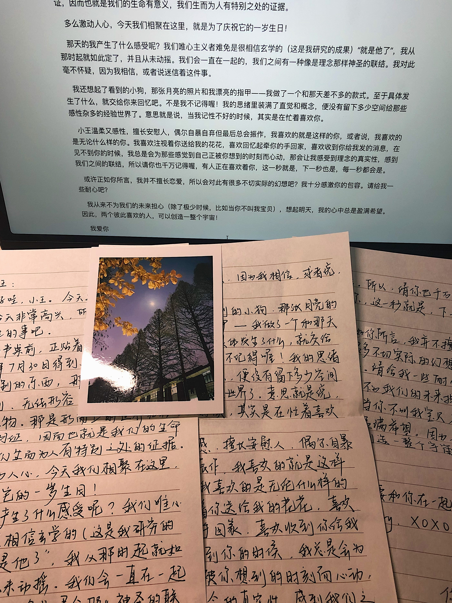

22-07-30
你好哇，小王。今天过得怎么样？
我今天非常高兴，所以，让我来想一想一年前发生的事吧。
我的书桌前正贴着那张展览的票根，我在2021年7月30日得到了它。那一天，我还得到了一些别的东西，那是什么呢？看不见，摸不到，无法形容，原来那就是真正的超验之物。那是形而上的世界存在无可辩驳的明证，因而也就是我们的生命有意义，我们生而为人有特别之处的证据。
多么激动人心，今天我们相聚在这里，就是为了庆祝它的一岁生日！
那天的我产生了什么感受呢？我们唯心主义者难免是很相信玄学的（这是我研究的成果）“就是他了”，我从那时起就如此定了，并且从未动摇。我们会一直在一起的，我们之间有一种像是理念那样神圣的联结。我对此毫不怀疑，因为我相信，或者说迷信着这件事。
我还想起了看到的小狗，那张月亮的照片和我漂亮的指甲——我做了一个和那天差不多的款式。至于具体发生了什么，就交给你来回忆吧。不是我不记得喔！我的思绪里装满了直觉和概念，便没有留下多少空间给那些感性杂多的经验世界了。意思就是说，当我记性不好的时候，其实是在忙着喜欢你。
小王温柔又感性，擅长安慰人，偶尔自暴自弃但最后总会振作，我喜欢的就是这样的你，或者说，我喜欢的是无论什么样的你。我喜欢注视着你送给我的花花，喜欢回忆起牵你的手回家，喜欢收到你给我发的消息，在见不到你的时候，我总是会为那些感觉到自己正被你想到的时刻而心动，那会让我感受到理念的真实性，感到我们之间的联结，所以请你也千万记得喔，有人正在喜欢着你，这一秒就是，下一秒也是，每一秒都会是。
或许正如你所言，我并不擅长恋爱，所以会对此有很多不切实际的幻想吧？我十分感激你的包容。请给我一些耐心吧？
我从来不为我们的未来担心（除了极少时候，比如当你不叫我宝贝），想起明天，我的心中总是盈满希望。因此，两个彼此喜欢的人，可以创造一整个宇宙！
我爱你
祝 夏天快乐！我只要和你在一起就会快乐了。
好用心啊555
我要背下来！
评论区